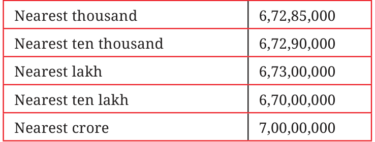

With large numbers it is useful to know the nearest thousand, lakh or crore. For example, the nearest neighbours of the number 6,72,85,183 are shown in the table below.

Similarly, write the five nearest neighbours for these numbers:
- (a)3,87,69,957
- (b)29,05,32,481
I have a number for which all five nearest neighbours are 5,00,00,000. What could the number be? How many such numbers are there?
Roxie and Estu are estimating the values of simple expressions.
- 1.\(4,63,128 + 4,19,682\),
Roxie: “The sum is near 8,00,000 and is more than 8,00,000.” Estu: “The sum is near 9,00,000 and is less than 9,00,000.”
- (a)Are these estimates correct? Whose estimate is closer to the
sum?
- (b)Will the sum be greater than 8,50,000 or less than 8,50,000?
Why do you think so?
- (c)Will the sum be greater than 8,83,128 or less than 8,83,128?
Why do you think so?
- (d)Exact value of \(4,63,128 + 4,19,682 =\) ___________
- 2.\(14,63,128 - 4,90,020\)
Roxie: “The difference is near 10,00,000 and is less than 10,00,000.” Estu: “The difference is near 9,00,000 and is more than 9,00,000.”
- (a)Are these estimates correct? Whose estimate is closer to the
difference?
- (b)Will the difference be greater than 9,50,000 or less than
9,50,000? Why do you think so?
- (c)Will the difference be greater than 9,63,128 or less than
9,63,128? Why do you think so?
- (d)Exact value of \(14,63,128 - 4,90,020 =\) __________